序厅
长城脚下的世外桃源 · A Paradise at the Foot of The Great Wall
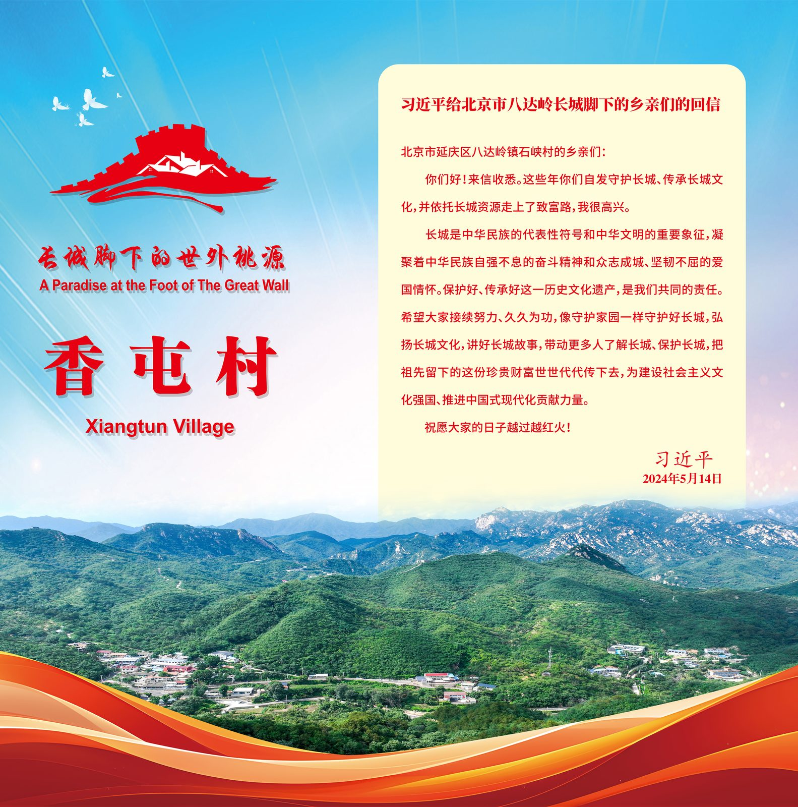
习近平总书记回信
给北京市八达岭长城脚下的乡亲们
北京市延庆区八达岭镇石峡村的乡亲们：
你们好！来信收悉。这些年你们自发守护长城、传承长城文化，并依托长城资源走上了致富路，我很高兴。
长城是中华民族的代表性符号和中华文明的重要象征，凝聚着中华民族自强不息的奋斗精神和众志成城、坚韧不屈的爱国情怀。保护好、传承好这一历史文化遗产，是我们共同的责任。
希望大家接续努力，久久为功，像守护家园一样守护好长城，弘扬长城文化，讲好长城故事，带动更多人了解长城、保护长城，把祖先留下的这份珍贵财富世世代代传下去，为建设社会主义文化强国、推进中国式现代化贡献力量。
祝愿大家的日子越过越红火！
习近平
2024 年 5 月 14 日
展厅动线
香屯记忆
The Memory of Xiangtun Village
香屯村位于北京市延庆区大庄科乡东南，四面环山，一水中流，为藏风聚气之福地，宛如陶渊明笔下的世外桃源，2007 年被评为"北京市最美乡村"。
香屯人文底蕴深厚，早在辽代就是"辽代首钢"的采矿地，明代成为昌镇黄花路前哨，是守卫陵京的重要防线。抗日战争时期，这里又成为了抵抗日寇侵略的前沿阵地。
香屯自然资源丰富，林木覆盖率达 95%，位居全区之首。村庄北依长城，民居依山势而建，错落有致。村中的古井、石磨、石碾、上千株的百年古栗树，以及村东幽静的大云峡谷，无一不揭示出村庄的古朴与天然。
2022 年，北京市文物局启动了香屯段长城研究性修缮工程，开启了长城科学保护、长城文化推动乡村振兴的新篇章。在延庆区委宣传部、大庄科乡党委政府的大力支持下，我们举办了乡情村史展览，以让更多的人了解香屯、爱上香屯，让香屯的山更青、水更绿，香屯人的生活更美好！
村庄建制
香屯村地处延庆区大庄科乡东南，距乡政府驻地 10 公里。北邻龙泉峪村、旺泉沟村，南邻东王庄村，西接东三沟村。村域面积 4.27 平方公里，海拔 400 米，截至 2023 年底，全村共 38 户 74 口人，是一座没有耕地的村庄。
据史籍记载，香屯所在的大庄科地区在商周至春秋时期有山戎人活动，历经燕、上谷郡、幽州、儒州缙山县、龙庆州、昌镇、延庆州。1913 年全国撤州设县，香屯属延庆县。1945 年与"后七村"一起划归怀柔，解放后复归延庆。清光绪《昌平州志》有山羊香屯村的记载，与城南香屯村相区别，村内原有庙，早时香火旺盛，香烟缭绕，故名香屯。
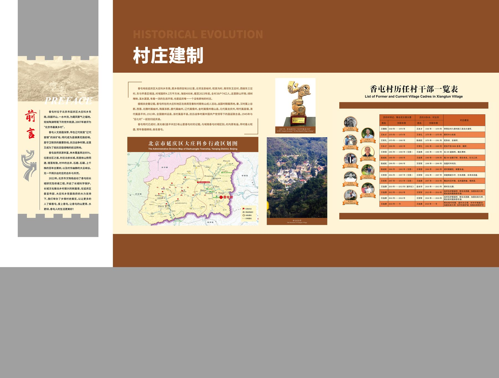
含大庄科乡行政区划图 · 香屯村历任村干部一览表（1949—至今，14 任书记 / 村主任）
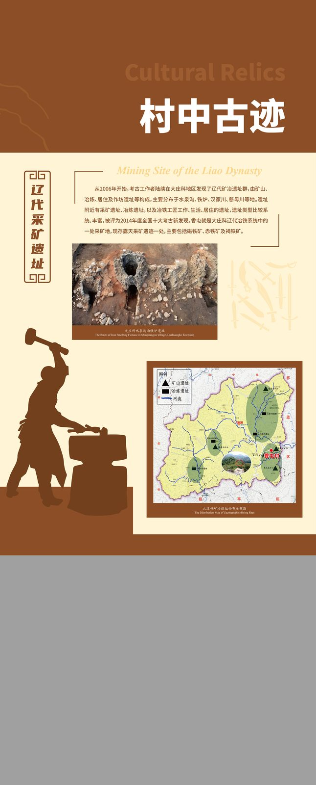
大庄科辽代矿冶遗址群 · 2014 年全国十大考古新发现
村中古迹 · 辽代采矿遗址
Mining Site of the Liao Dynasty
从 2006 年开始，考古工作者陆续在大庄科地区发现了辽代矿冶遗址群，由矿山、冶炼、居住及作坊遗址等构成，主要分布于水泉沟、铁炉、汉家川、慈母川等地。
遗址附近有采矿遗址、冶炼遗址，以及冶铁工匠工作、生活、居住的遗址，遗址类型比较系统、丰富，被评为 2014 年度全国十大考古新发现。
香屯就是大庄科辽代冶铁系统中的一处采矿地，现存露天采矿遗迹一处，主要包括磁铁矿、赤铁矿及褐铁矿。
狮子柳外口谴台 · 狮子柳外口堡塞
The Great Wall Watchtower and Fort
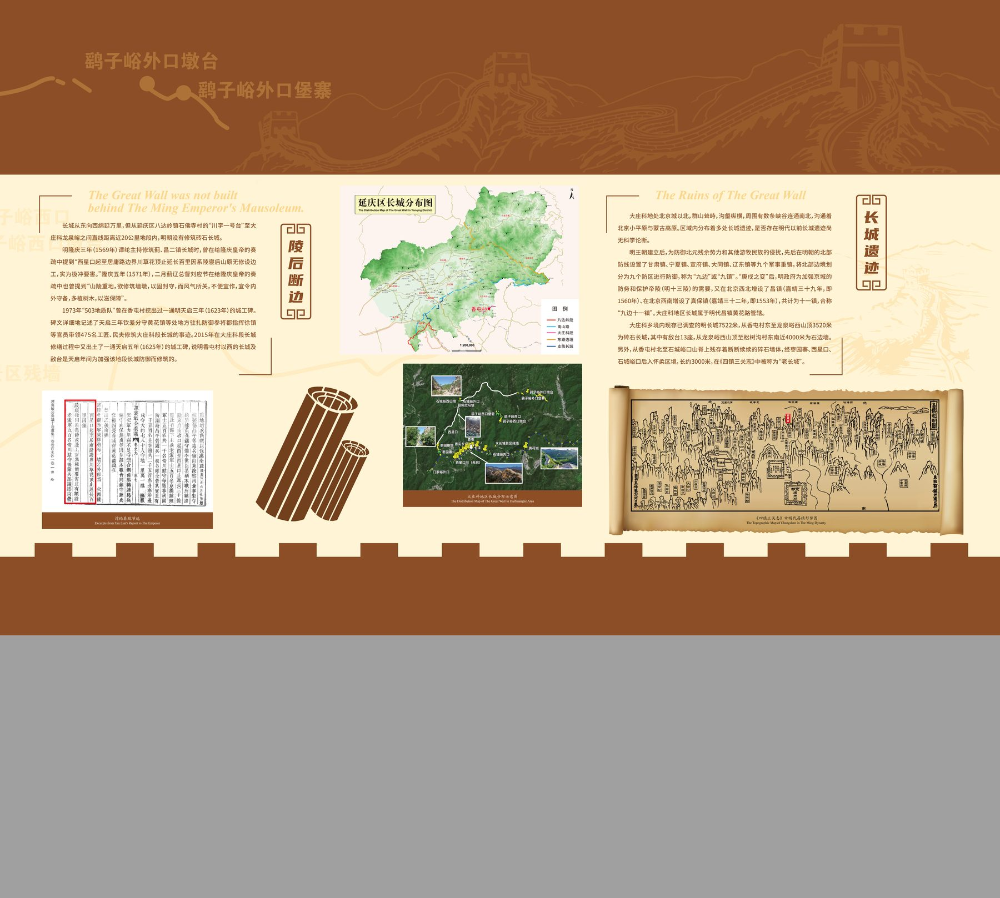
含历代舆图考证 · 明代边防文书 · 大庄科段长城卫星图
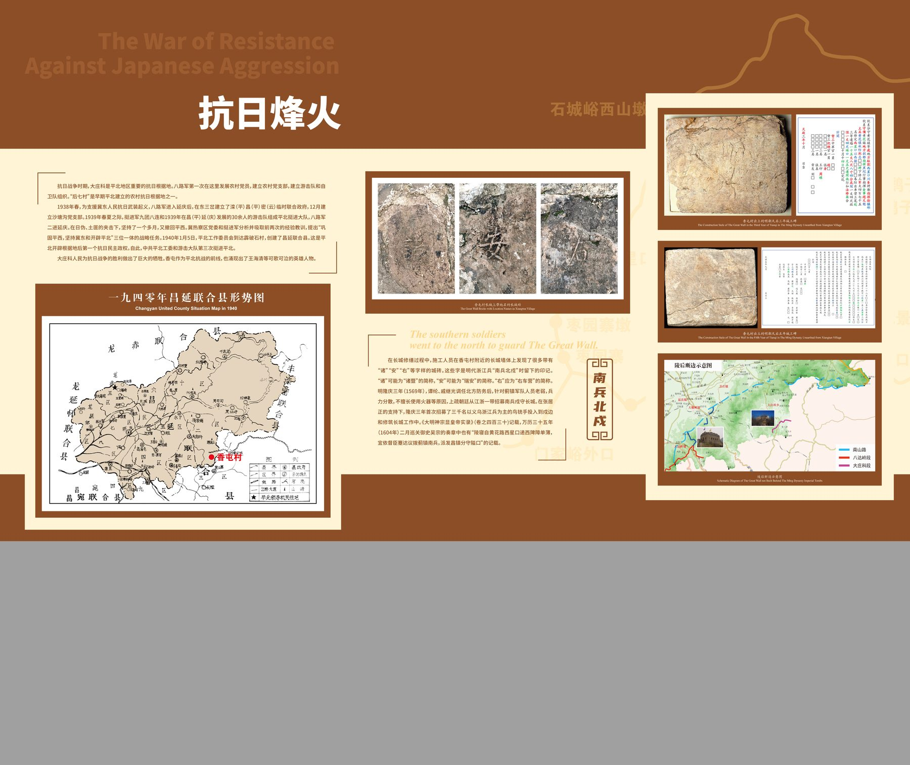
抗日烽火
The War of Resistance Against Japanese Aggression
石城隘西山战役 · 平北军分区联合指挥部驻地 · 石城砖瓦文物。
抗日战争时期，香屯作为长城防线一线，成为抵抗日寇侵略的前沿阵地，留下了昌延联合县、平北根据地的斗争印记。
烈士传记 · 王海清 · 卫兴顺
Two Heroes of Xiangtun
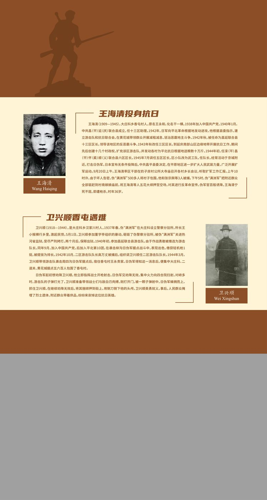
王海清投身抗日
Wang Haiqing · 1909—1945
大庄科乡香屯村人，原名王永和，化名千一。1938 年加入中国共产党。1940 年 1 月中共昌（平）延（庆）联合县成立后，历任十三区助理、昌延联合县十三区区长、六区区长、五区区长，组建十几个村政权，为平北抗日根据地送粮数十万斤。
1945 年 9 月 20 日，王海清率区干部在房子房村召开各村乡长会议。因坏人告密，伪"满洲军"500 余人包围村庄。王海清等人被捕后押至村南娘娘庙前空场，宁死不屈，即遭枪杀，时年 36 岁。
卫兴顺香屯遇难
Wei Xingshun · 1918—1944
大庄科乡汉家川村人。1937 年春参加暴动痛歼伪警察分驻所后入狱。1940 年初参加昌延联合县游击队，作战勇敢被推选为队长，9 月加入中国共产党。1942 年 10 月任二区游击队队长。
1944 年 3 月袭击周西沟伪军后，日伪军集中大庄科、二道关、黄花城五六百人包围香屯村。卫兴顺指挥 12 名战士激战至子弹打光，与敌白刃肉搏，被捕后遭枭首，英勇就义，人民群众含泪掩埋忠骨。
守护长城
The Protection of The Great Wall
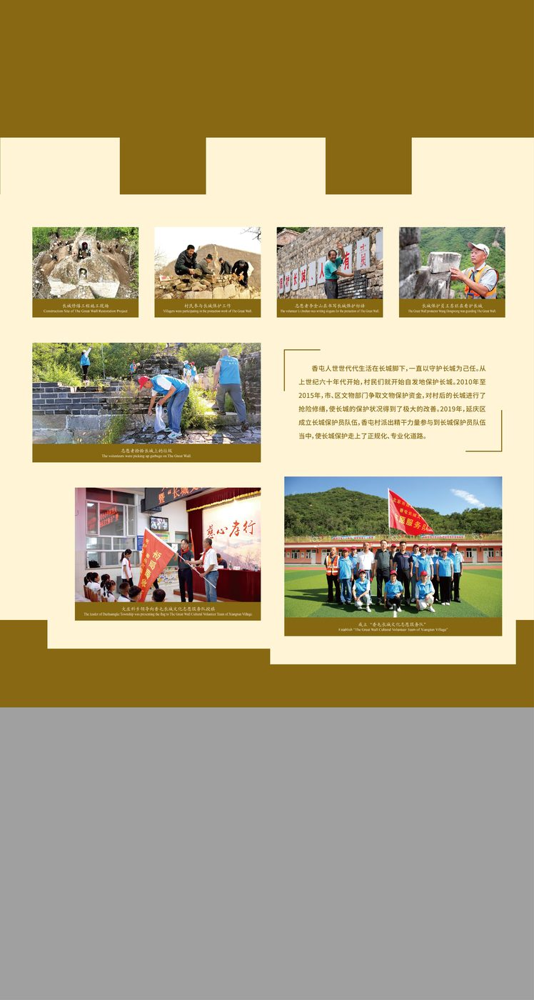
村民自发守护
香屯人世世代代生活在长城脚下，一直守护着长城至今已有。从上世纪六十年代开始，村民们就开始自发地保护着长城。
2010 年至 2015 年，市区文物部门净取文物保护资金，对村民的长城进行了抢险修缮，使长城保护工作得到了极大的改善。
2019 年，延庆区成立长城保护员队伍，香屯村选聘护林员同时兼任长城保护员，守护队伍更上了一个正规化、专业化建设。
研究修缮 · 植物专业 · 考古专业
Research and Repair on the Same Time
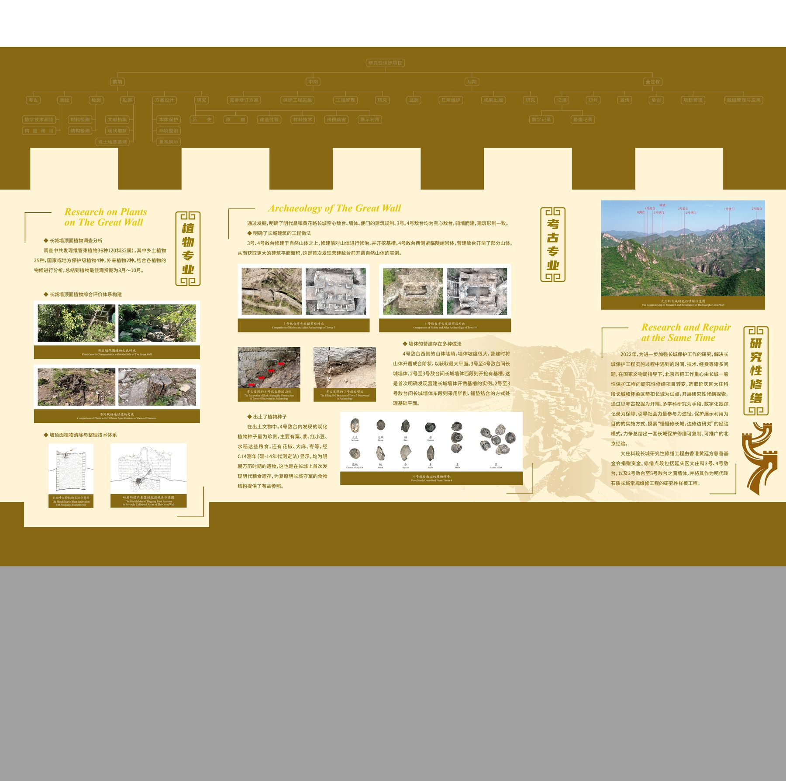
植物专家对敌台苔藓、病害的记录 · 考古专家对明代建筑基址、出土器物的分析
结构专业 · 材料专业
Research on the Structure & Building Materials of The Great Wall
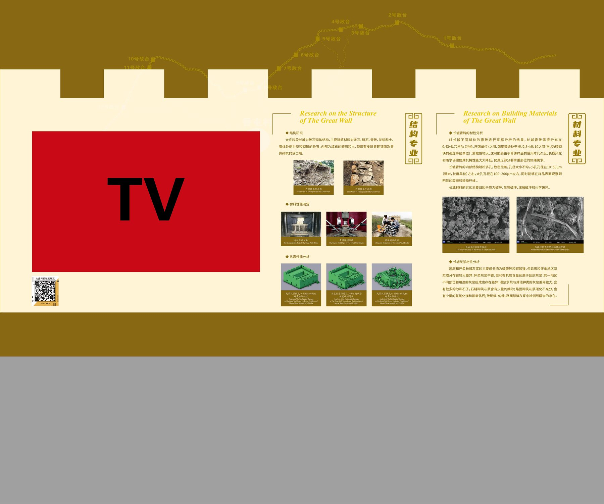
大庄科段长城 11 号—1 号敌台示意 · 抗震性能分析 · 建筑材料显微图
数字化专业 · 文物展陈专业
Digitalization & Repair Plan of The Great Wall
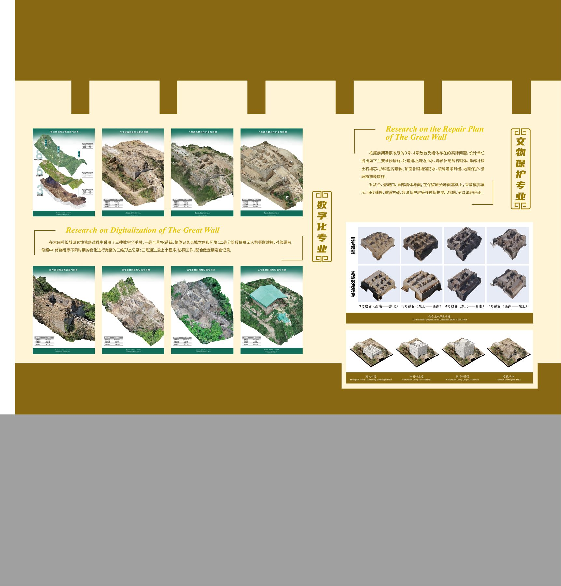
各敌台三维重建模型 · 研究性修缮方案 · 文物保护展陈设计
香屯建设
The Construction of Xiangtun Village
发展旅游 · 物产丰富
Develop Tourism by Utilizing Resources · Rich in Products
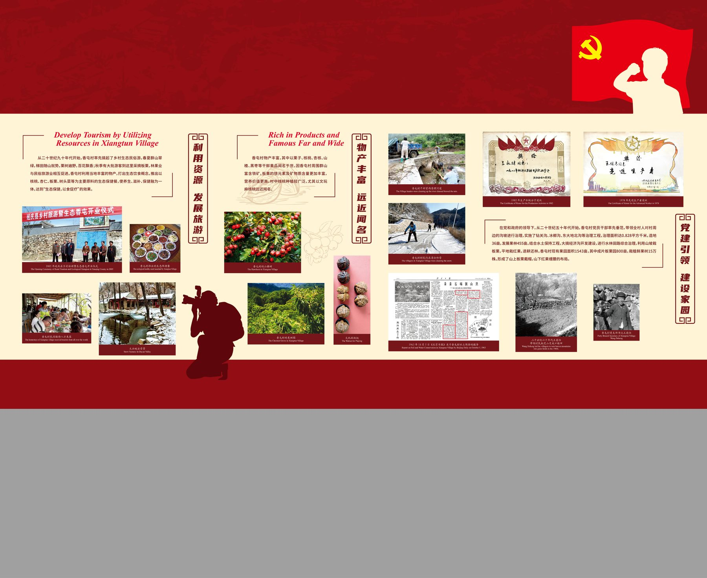
板栗 · 蔬菜 · 野菜 · 土蜂蜜 — 香屯依托长城与生态资源发展乡村旅游
本着初心 · 砥砺前行
Development Plan · Gather Talents to Boost the Development
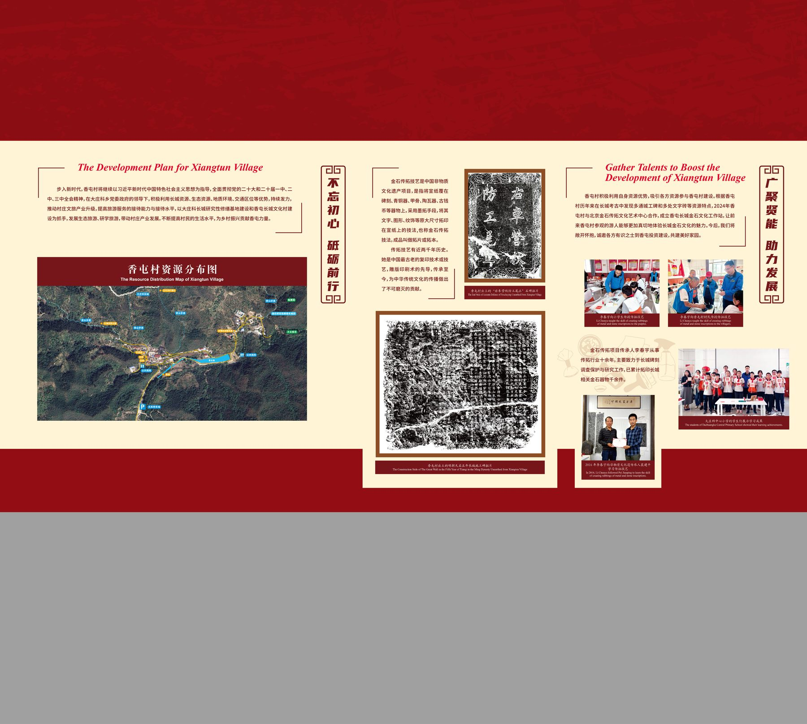
香屯村资源分布图 · 乡贤引才照片 · 村企合作框架
香屯有着得天独厚的自然资源优势，有着博大精深的长城文化背景，有着其不屈的红色文化根脉。作为长城脚下北京市最美乡村，香屯走过了辉煌的过去，在社会主义新农村建设的今天，香屯勇敢地面对着新的机遇和挑战。
2024 年 5 月 14 日习近平总书记在给八达岭长城脚下乡亲们的回信中，对石峡村村民自发守护长城、传承长城文化，并依托长城资源走上了致富路给予了充分肯定。香屯村同样有着世世代代守护长城、传承长城文化的传统。我们一定牢记习近平总书记嘱托，接续努力，久久为功，像守护家园一样守护好长城。
在守护好长城的同时，积极利用自身资源优势，努力推动香屯振兴，让绿水青山真正变成金山银山，让香屯一直成为北京最美村庄。
在香屯村乡情村史陈列室建设过程中，我们得到了北京建筑大学、北京市考古研究院（北京市文化遗产研究院）、北京未名文博文科科技有限公司、延庆区委宣传部、延庆区文物局、大庄科乡党委政府以及各界热心人士的关心和帮助，在此谨向那些关心和帮助过我们的单位和个人表示衷心的感谢！
香屯村村委会
2024 年 9 月
我们都是长城守护人
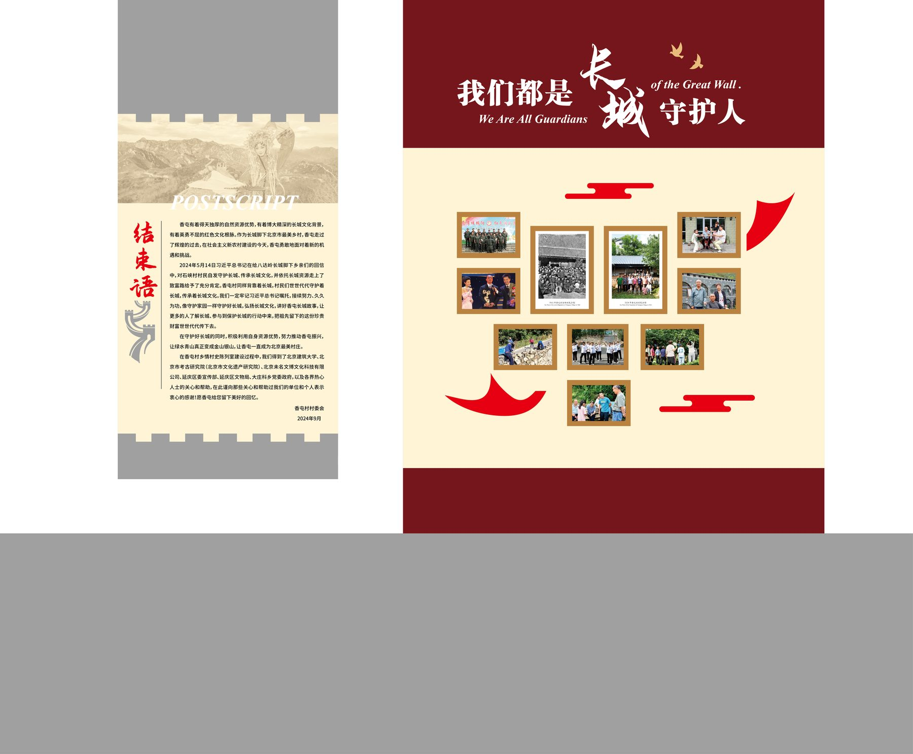
2024 年 9 月 · 香屯村乡情村史陈列室落成合影墙